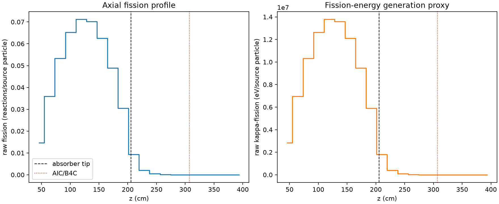
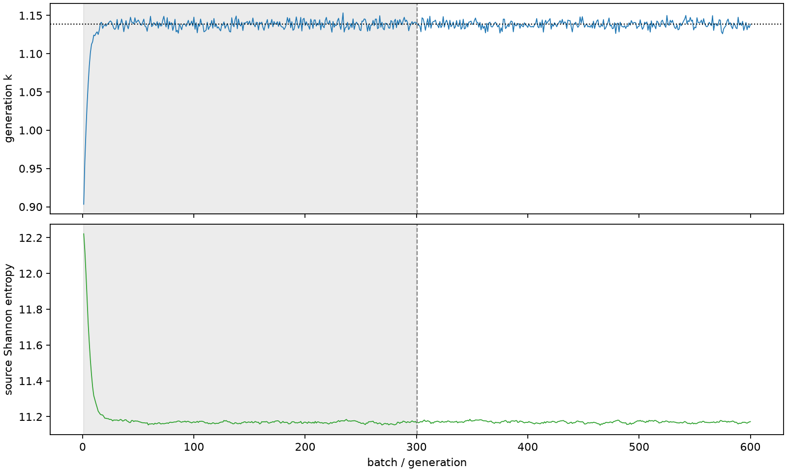

| field | value |
|---|---|
| experiment | V2-ADAPTIVE_01-0016 |
| k | 1.1383993494229772 |
| MC standard error | 0.00018616824406129842 |
| seconds | 988.6663613719866 |
| acceptance | not_assessed |
| convergence | review_required |
Completed is output integrity only; physical and statistical review required. Zero tallies do not prove zero production or zero uncertainty.
| diagnostic | value |
|---|---|
| geometric fuel voxels | 5280 |
| zero fission tally voxels | 692 |
| low signal fuel voxels | 1839 |
| low signal fission share | 9.552554767583488e-05 |
| low signal kappa share | 9.556508368110036e-05 |
| important fission share | 0.9501003832970215 |
| previous filter included | 3441 |
| duration estimate s | 1562.5173488400023 |
| actual minus estimate s | -573.8509874680158 |
| fission relative MC error | statistics |
|---|---|
| all_geometric_fuel | {"voxels": 5280, "positive_mean_voxels": 4588, "zero_mean_voxels": 692, "undefined_relative_error_voxels": 692, "median": 0.013811994058135189, "p95": 0.9675955946565522, "maximum": 1.0000000000000002} |
| low_signal | {"voxels": 1839, "positive_mean_voxels": 1147, "zero_mean_voxels": 692, "undefined_relative_error_voxels": 692, "median": 0.6034018733408377, "p95": 1.0, "maximum": 1.0000000000000002} |
| important_95pct | {"voxels": 2172, "positive_mean_voxels": 2172, "zero_mean_voxels": 0, "undefined_relative_error_voxels": 0, "median": 0.006915763646646928, "p95": 0.01007289147161867, "maximum": 0.014317072820353188} |
| outside_previous_filter | {"voxels": 1839, "positive_mean_voxels": 1147, "zero_mean_voxels": 692, "undefined_relative_error_voxels": 692, "median": 0.6034018733408377, "p95": 1.0, "maximum": 1.0000000000000002} |
| kappa_fission relative MC error | statistics |
|---|---|
| all_geometric_fuel | {"voxels": 5280, "positive_mean_voxels": 4588, "zero_mean_voxels": 692, "undefined_relative_error_voxels": 692, "median": 0.01379545461488603, "p95": 0.9675593472021761, "maximum": 1.0000000000000002} |
| low_signal | {"voxels": 1839, "positive_mean_voxels": 1147, "zero_mean_voxels": 692, "undefined_relative_error_voxels": 692, "median": 0.6023356834454778, "p95": 1.0, "maximum": 1.0000000000000002} |
| important_95pct | {"voxels": 2172, "positive_mean_voxels": 2172, "zero_mean_voxels": 0, "undefined_relative_error_voxels": 0, "median": 0.006907916519654478, "p95": 0.010061712832788818, "maximum": 0.014301288214385558} |
| outside_previous_filter | {"voxels": 1839, "positive_mean_voxels": 1147, "zero_mean_voxels": 692, "undefined_relative_error_voxels": 692, "median": 0.6023356834454778, "p95": 1.0, "maximum": 1.0000000000000002} |
| axial bin | fission share | kappa-fission share |
|---|---|---|
| 1 | 0.031441326966064026 | 0.03144265174003023 |
| 2 | 0.07747258364143579 | 0.0774719274565309 |
| 3 | 0.11489138029942404 | 0.11489044146283448 |
| 4 | 0.14052837612654936 | 0.14052747830661386 |
| 5 | 0.1531838286707303 | 0.15318242507197397 |
| 6 | 0.1510326853822346 | 0.1510314992475739 |
| 7 | 0.13465124095749362 | 0.13465000622485118 |
| 8 | 0.10526951330702637 | 0.10526862661576335 |
| 9 | 0.06563837018672235 | 0.06563789520921583 |
| 10 | 0.020038636662775246 | 0.020042749477316404 |
| 11 | 0.004389205189141145 | 0.004390841630587882 |
| 12 | 0.0010871797487999526 | 0.001087617910657131 |
| 13 | 0.0002774874319582463 | 0.0002776138937833731 |
| 14 | 7.320588446690876e-05 | 7.323586580427281e-05 |
| 15 | 1.9771096693615833e-05 | 1.977868212916856e-05 |
| 16 | 3.964418226702466e-06 | 3.965359613947649e-06 |
| 17 | 8.298389668058656e-07 | 8.309317383782846e-07 |
| 18 | 3.389656648209886e-07 | 3.393425430088812e-07 |
| 19 | 6.598761953440147e-08 | 6.617004251403936e-08 |
| 20 | 9.238006497924419e-09 | 9.400396377420976e-09 |
Histories include the inactive-to-active transition at batch 300. kappa-fission approximates fission energy production, not total heat deposition.

